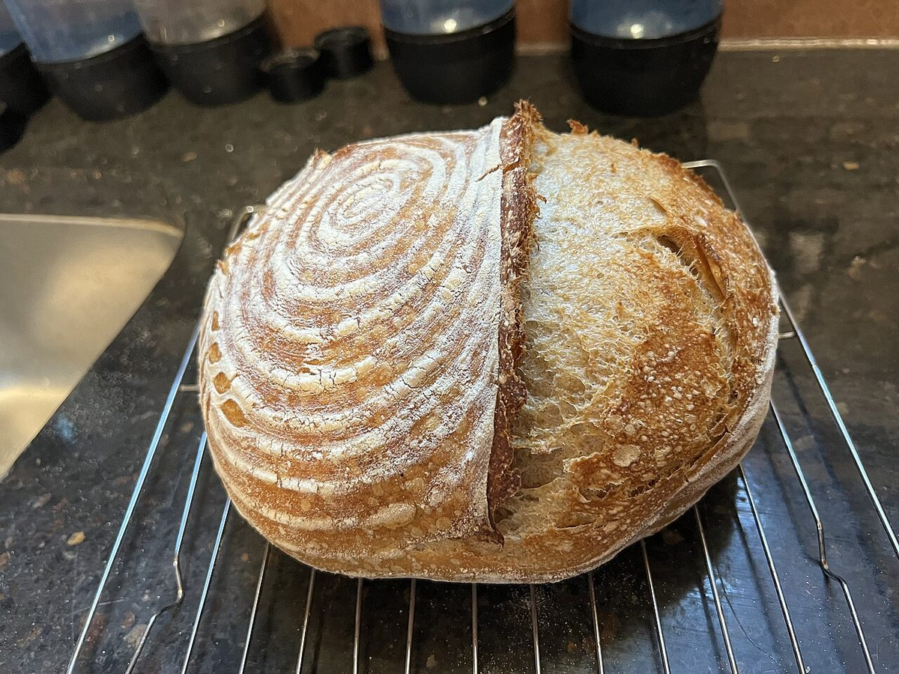
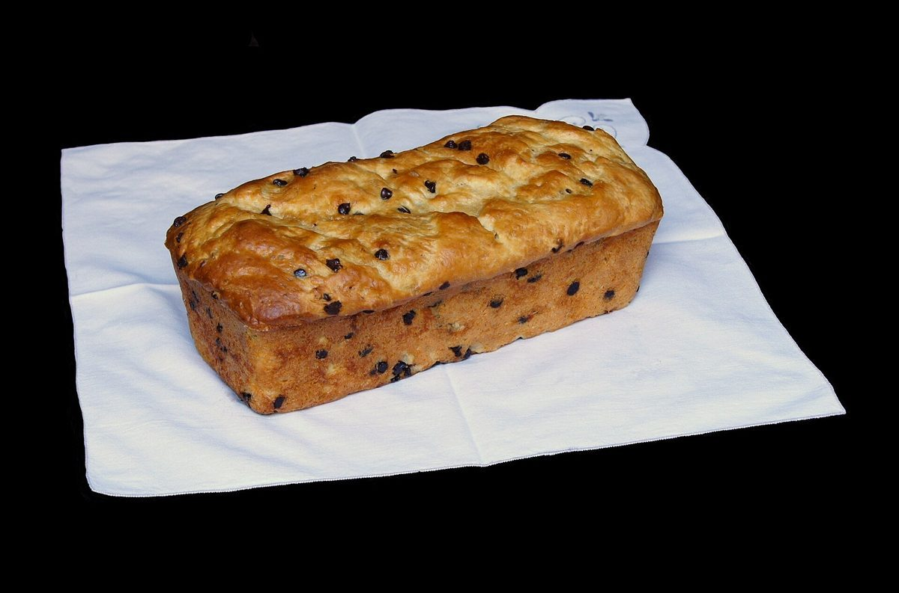
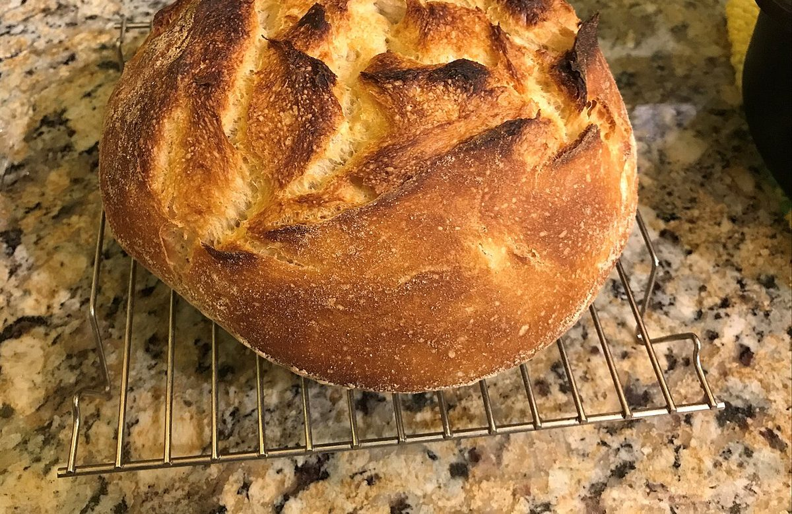
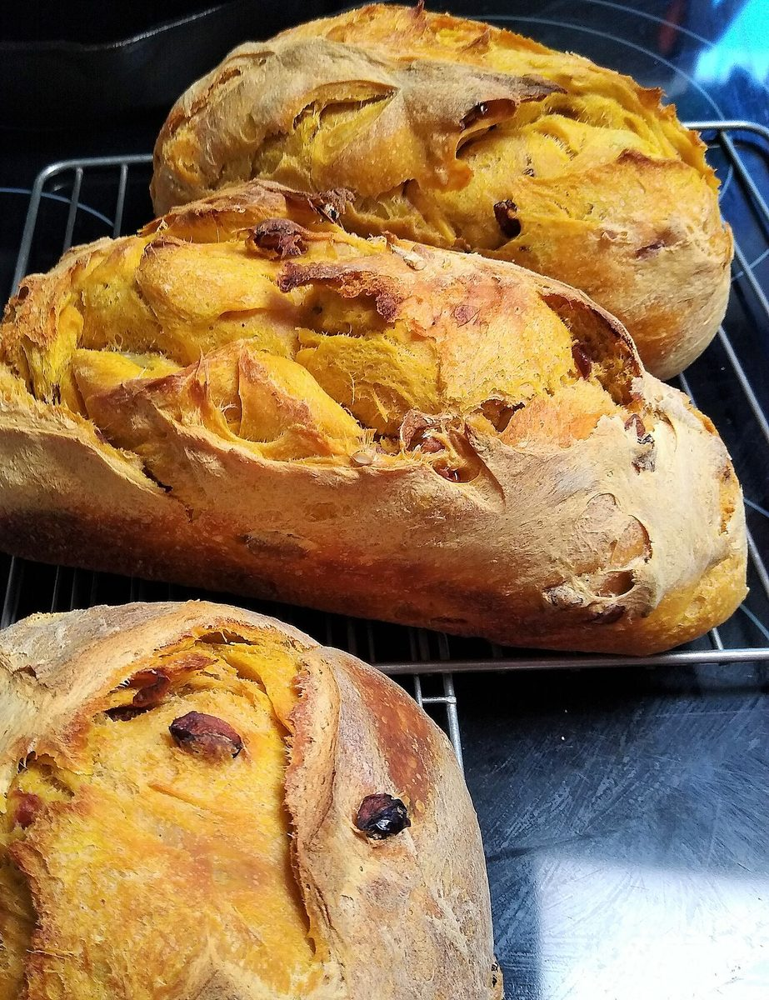

NE555 STYLE / 8-PIN PACKAGE
BREADLABO555
宮崎県北諸県郡三股町宮村２９０２にあるパン屋、BREAD LABO 555の試作ホームページです。
- 1 GND
- 2 TRIG
- 3 OUT
- 4 RESET
BL555LABO-8P
- 8 VCC
- 7 DISCH
- 6 THRES
- 5 CTRL
見立ての由来: 屋号の「555」から、制作側が8本足のタイマーICを連想して組み立てたデザインです。制作側の連想で、お店の理念・由来とは無関係です。

ピンを一本ずつ、ページをめくるように。
PIN CONFIGピン配置表
8本の足が、このサイトのページに対応しています。足の番号が、上のメニューの「PIN」の数字です。
| PIN | 名称 | 意味 | 行き先 |
|---|---|---|---|
| 1 | GND | 接地 | アクセス |
| 2 | TRIG | 引き金 | メニュー |
| 3 | OUT | 出力 | 口コミ |
| 4 | RESET | リセット | 予備(準備中) |
| 5 | CTRL | 制御 | このサイトについて |
| 6 | THRES | しきい値 | 予備(準備中) |
| 7 | DISCH | 放電 | |
| 8 | VCC | 電源 | ホーム |
SPECIMEN SHELF写真の標本棚
パンのイメージ写真を並べています。国外または撮影地不明のフリー素材で、お店のものではありません。






ELECTRICAL CHARACTERISTICSお店のデータ
| 所在地 | 宮崎県北諸県郡三股町宮村２９０２ |
|---|---|
| 電話 | 0986-52-6050 |
| @breadlabo555 | |
| 営業時間 | 準備中 |
| 定休日 | 準備中 |
| メニュー・価格 | 準備中 |
| 予約 | 準備中 |
| 駐車場 | 準備中 |
「準備中」の項目は、確認でき次第ご案内する想定です。